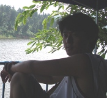
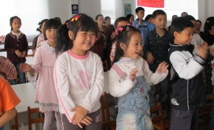
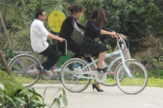
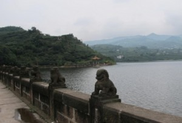

In and Around Chengdu
This is a 3-part posting about various trips that I, fellow couch surfers and friends have recently made. Peter, my Chinese friend from Jilin Province, and Katya and Mirko, from Europe, went on a ride 30 kilometers north of the city to explore a bike path in the countryside. I, Peter, Katya and Mirko went on a ride 25 kilometers southeast of the city to the town of Longquan through the countryside on another day trip about 2 weeks ago. Before that, we cycled around town following the rivers and once rode south of the third ring road, following the river south, and through the countryside heading east towards the town’s race track. And, finally, Peter and I discovered a new bike park being completed in the southeast side of the city near the race track. Here’s what we concluded about biking in and near Chengdu.


Dhane (DB): How was this ride organized, who took part in it, and why did you participate?
Peter (PW): DD007 is a group of parents and their children who explore nature and science together by going to places outside of Chengdu. The coordinator of this group, Mr. Lee, was contacted by a local community leader in Wenjang because she wanted to promote the new bicycle path opened there. Both local children and kids from Chengdu had been invited to cycle this new path and enjoy the countryside. Mr. Lee invited me, Katya and Mirko to join him and his son on the ride. I decided to take part because Dhane suggested that I help as he was suffering from a bad cold. So, I rode to Wenjang with Katya and Mirko while Dhane stayed home in bed.
DB: Where did the bike ride begin and end and how did you get there?
PW: The only problem was that to participate in the ride, we had to cycle 30 kilometers first along busy and dusty highways just to get there to ride 8 kilometers on this beautiful bike path. We also rode the same distance back to Chengdu, suffering from the congested highway and air pollution along the way. Now, I know the meaning of ‘being shang-haied’!
DB: Can you describe the bike path briefly — giving your personal opinion of the scenery and riding conditions?


DB: Do you think this kind of cycling is appropriate for family members, and if so, how so?
PW: I think it’s really nice if people take the bus there with their bikes or if they live nearby. But, cycling there from Chengdu is a nightmare! That only goes to prove how much such bicycling paths are needed. I can’t imagine a family trying to ride with young children along China’s highways or in its cities. It is a recipe for disaster!
DB: How would you have organized the event differently, if at all, and why?
PW: I would have enjoyed it much more if we hadn’t needed to ride there from Chengdu along the highways. The air pollution we suffered from erased all the good memories of the day. I wouldn’t ever do it again that way.


PW: It was a great event for everyone. I would only suggest that more such parks are built everywhere so that children and their families could enjoy the fresh air, exercise, and pleasant company of friends. Please don’t bicycle along the highways again. It’s too dangerous for young children.
Part 2 — To Longquan
This was a ride that I had gone on before so I was able to lead Peter, Katya and Mirko there bypassing most of the busy highway traffic on the way. I had heard their story about the ride to Wenjang and felt guilty for suggesting it to them. So, I had to share a better day trip with them. Luckily, the weather cooperated — that’s unusual for the Chengdu area.
We followed the general direction of the highway — Peter and I had already traveled there by bus previously on a trip to a reservoir near Longquan — but this Saturday we took roads parallel to the highway and off it. So, we were able to go through the Sanseng Flower Park where a lot of people were enjoying the day out of town. It’s a good destination for the cyclist and a fellow couch surfer had mentioned it to me as a pleasant outing. There are a lot of restaurants there and even bicycles for hire so one can arrive by car but still enjoy the park.


So, we ended up asking directions from the locals and got sent to another lake closer to town. As an alternate destination, it is worth a visit but doesn’t have the number of restaurants the other one does. We visited the dam, checked out the restaurants and opted out for lunch back in Longquan. Peter and I had found a cheap local cafe with good food and, more importantly, cold, tasty local beer.
On the way back to Chengdu, we followed another highway that was unfortunately busier with traffic. We didn’t mind too much because it is a well landscaped route and there are nice bicycling paths on the hillsides overlooking the highway. One can ride above the exhaust fumes of the cars and still get some fresh air to breathe. One point worth remembering is that we found the local Giant bicycle factory near Longquan. We also found a fruit juice factory. We thought we could get some cheap juice from the stall outside its gates only to find out that the containers of juice were all several years old. That’s why they were so cheap! This IS China, after all. What can one expect of factory workers who get their hands on old juice? Their wages are low enough that you can’t blame them for making extra money on the side. If you want fresh fruit juice, I suggest you ride through a local fruit orchard and steal some fruit, like I did all the time in Thailand.
Part 3 — Chengdu’s Newest Bicycle Park
Just this last Sunday, Peter and I decided to explore a new bicycle path that we had discovered with Katya and Mirko the week before while on a short ride around the countryside southeast of my apartment. That was the day before Halloween and we had discovered a hilltop local cemetery with good views. We sat in the cemetery and had beers that Peter had bought for us. But, that was a ride when I was hungover so I don’t remember too much of it. I would say we were ‘communing’ with the ‘spirits’ in the best sense of the word in the Halloween tradition. We talked about the pluses and minuses of cremation vs. burial that day but that’s a topic for a different blog. Anyway, that day we had ended up behind the local Chengdu race track and stopped to watch a BMW race car team putting their vehicles through some practice runs. It was only just beyond the race track that we found the new bicycle path.
Peter and I didn’t realize at the time that it was part of an entire park being built for cyclists. This is a first for Chengdu. Yes, there are pleasant roads that follow the banks of the river as it passes through Chengdu but you can never quite get completely free of vehicular traffic and — pardon me — the river stinks. At times, it quite resembles an open sewer. As modern and convenient as Chengdu is in almost all other aspects, it is surprising the city never established a sewage treatment facility. I suppose the farmers downstream who benefit from the dirty water and use it for irrigation of their crops won’t complain. Perhaps, it is a subtle form of ‘payback’ for city dwellers who might ‘look down their noses’ at so-called dirt farmers! (pun intended)

As you can see in this picture above, it is called the Gaowei Bicycle Park and spreads over a large chunk of land dotted with farmers’ houses and fields between the 3rd ring road and 4th ring road. Peter and I entered the park from the lower left corner (of this map pictured above) and cycled around most of the park in about an hour. It was still under construction. Some of the paths are complete with a blacktop surface and painted divider line. Other paths are still soft dirt or gravel and have newly built shelters to rest at and take cover from the rain if it is falling. On the outer edges of the park are a few local restaurants — the map indicated that picnic spots would soon be open in the park as well.


I saw this boy ride down the hill and then push his bike back up it — he turned left just after I took this photo and rolled his bicycle down a slight incline to his house. He’s lucky to be living here. I envied him a bit. If you can find the park and have young children who want to bicycle this is the place for you — at last. Thank you, Chengdu.
Conclusion
If you’re looking for safe places to ride your bicycle in and around Chengdu and are an adult with cycling experience, I would suggest you folllow the rivers as much as possible. Alternatively, there are stretches of village-style farm lands and houses still remaining within the third ring road of the city. If you search for them and can remember your way, they are beautiful short cuts across and amidst the city’s tall towers built and under construction. To expand your horizons, get out beyond the third ring road and you’ll find some of the best cycling roads still meandering around the city’s outer edges. A ride out of the city along any of its highways isn’t worth the bother unless you have no choice. Use Google Maps and try to find alternate ways out of the city. If you don’t mind the stench of the river, it is easy to cycle along the pathways built beside it for pedestrians going south out of the city — guaranteed, no traffic. So, at least, it’s quiet and you can stop to chat with the fishermen along the banks. For myself and Peter, we’ve decided to move out a bit beyond the third ring road and enjoy the fresher air of the countryside. If you’re a couch surfer and traveling by cycle, you’re more than welcome to join us.
Postscript
The weekend before Christmas I was invited along with other Golden Apple teachers to be present at the opening ceremony for yet another bicycle park. I thought it might be the park I wrote about just above — it is yet another one that starts just across the street from the Gaowei park. It winds its way around the western edge of the race track and crosses the 4th ring road as it meanders out into the countryside. It is part of a large residential development being constructed around a large park and country club. It, too, is a nice alternative for Chengdu families with young children who want to teach their children how to cycle in safe surroundings. I was interviewed for this little ride and a newspaper article and t.v. report appeared the same day. I don’t imagine anyone was inspired by what I had to say but it at least warmed my own heart to think I had ‘discovered’ these two little bicycle parks before anyone else and got to ride them before they were opened with all the attendant fanfare. It makes me laugh to remember my bicycle rides across the Thai countryside with Burmese children and contrast it to these bicycle rides along ready made paths. I imagine I will discover yet more interesting bicycle paths in India next year. It’s not a bad note to end the year 2010 with.
Filed under: Cycling in China and
Leave a Reply